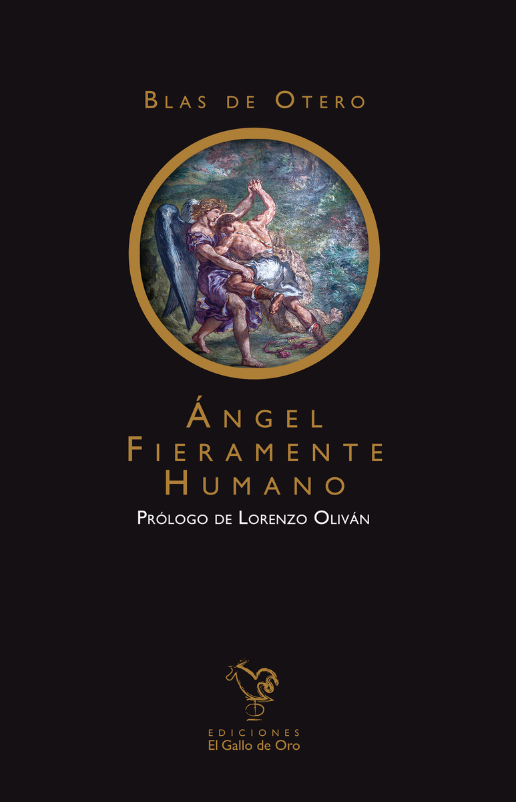
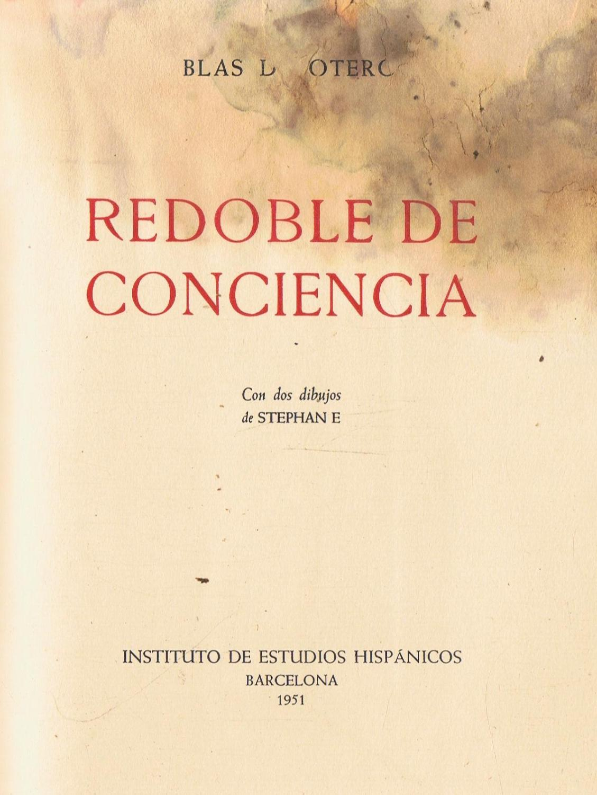
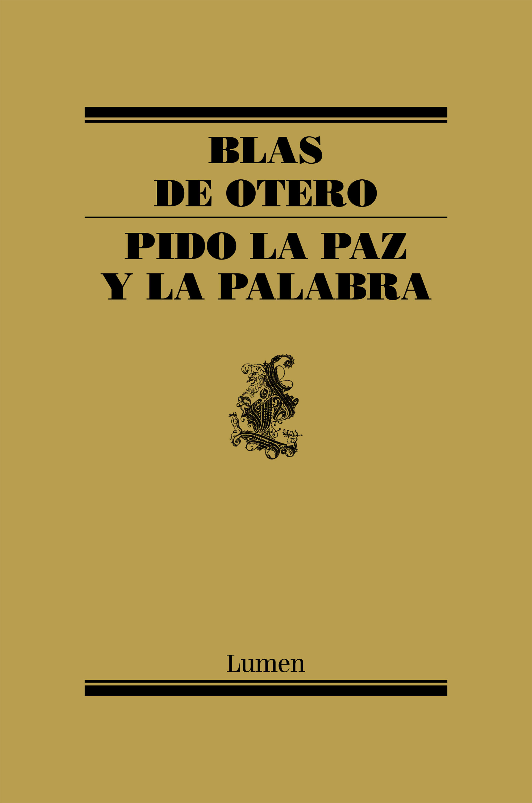

Blas de Otero
Libros:
Ángel fieramente humano

Poemas:
A la inmensa mayoría
Poema recitado:
Redoble de conciencia

Poemas:
En el principio
Cantautor/a:
Paco Ibañez
Pido la paz y la palabra

Poemas:
Pido la paz y la palabra
Poema recitado: